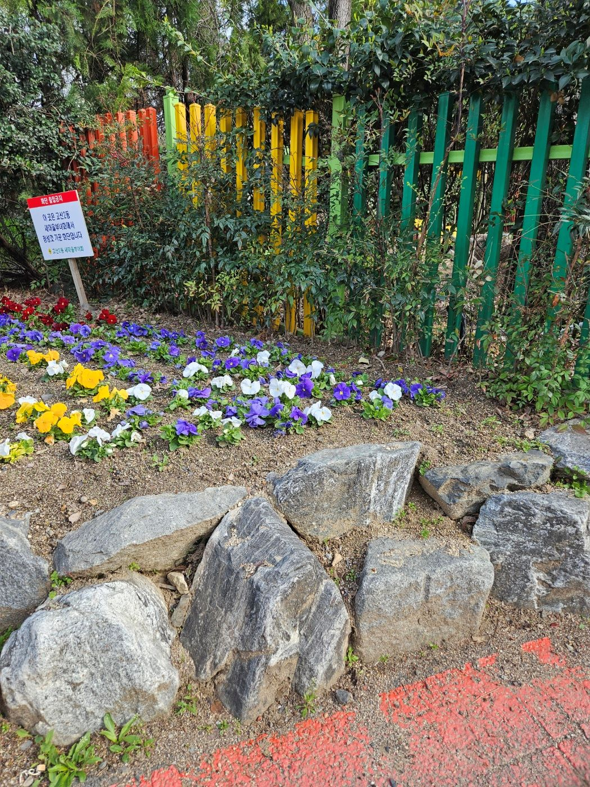
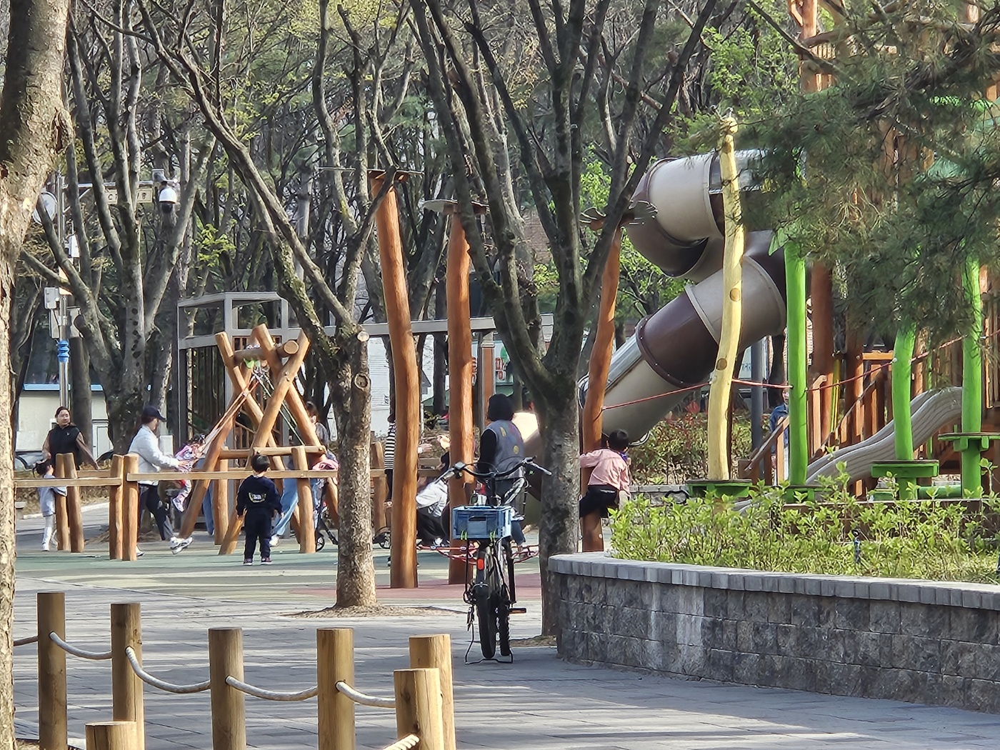
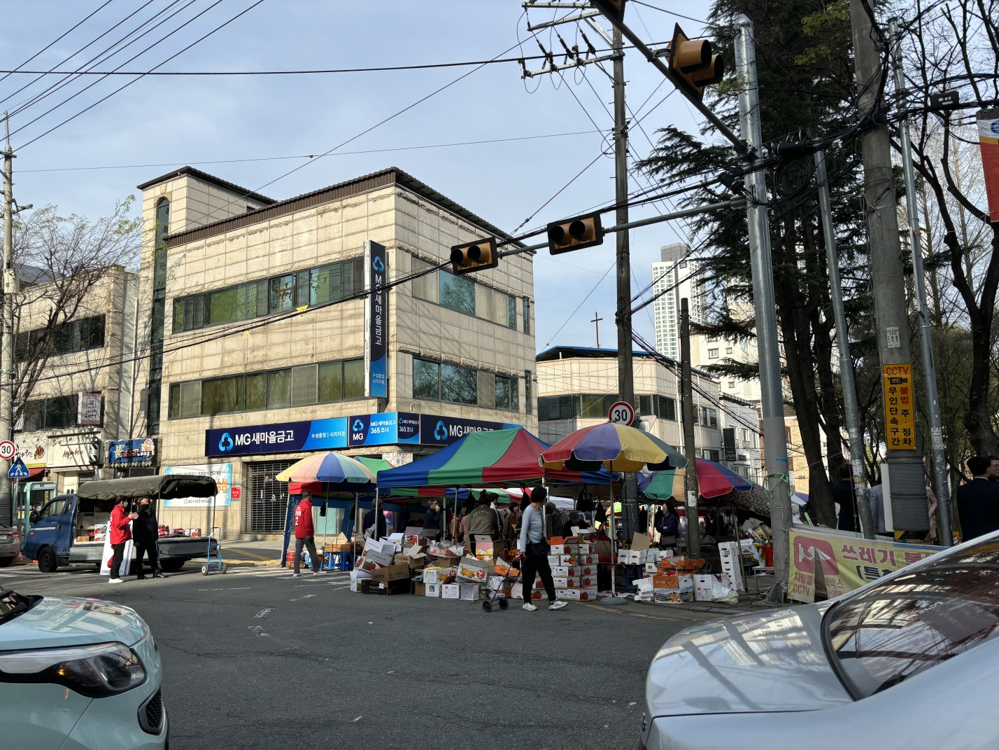
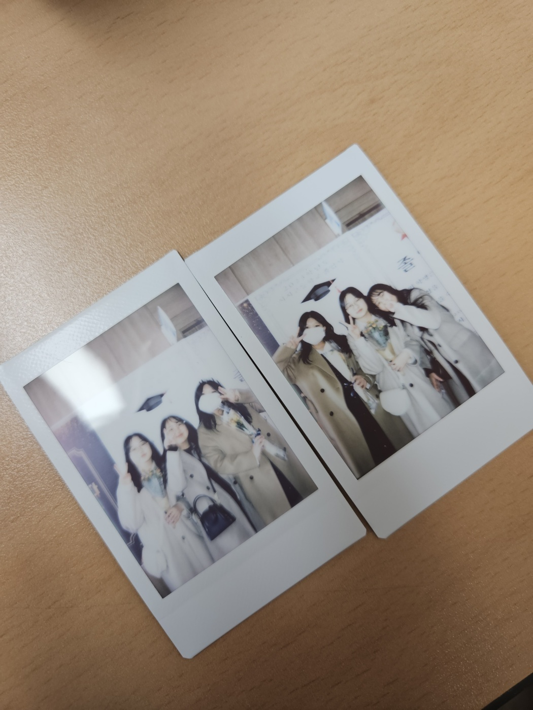
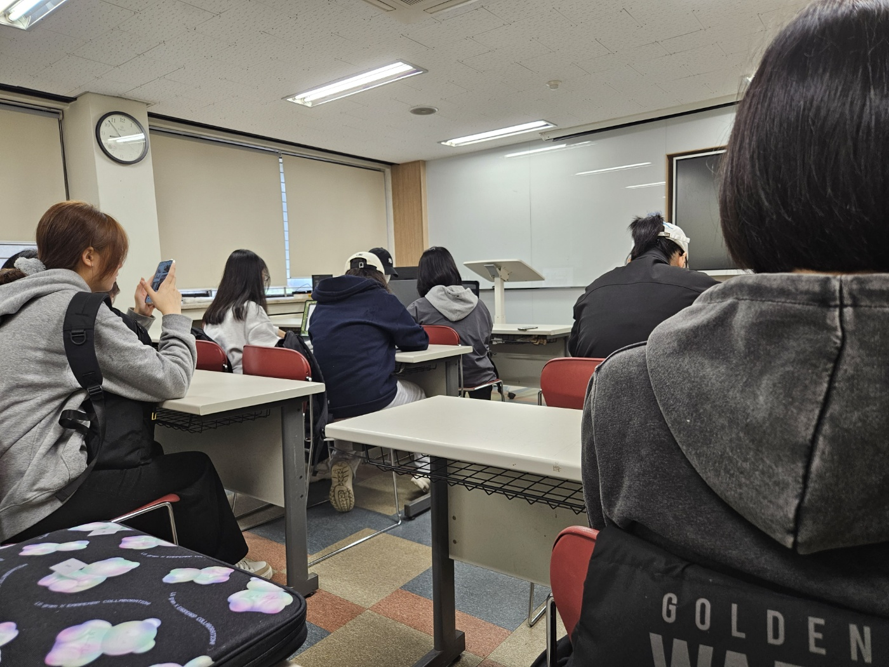
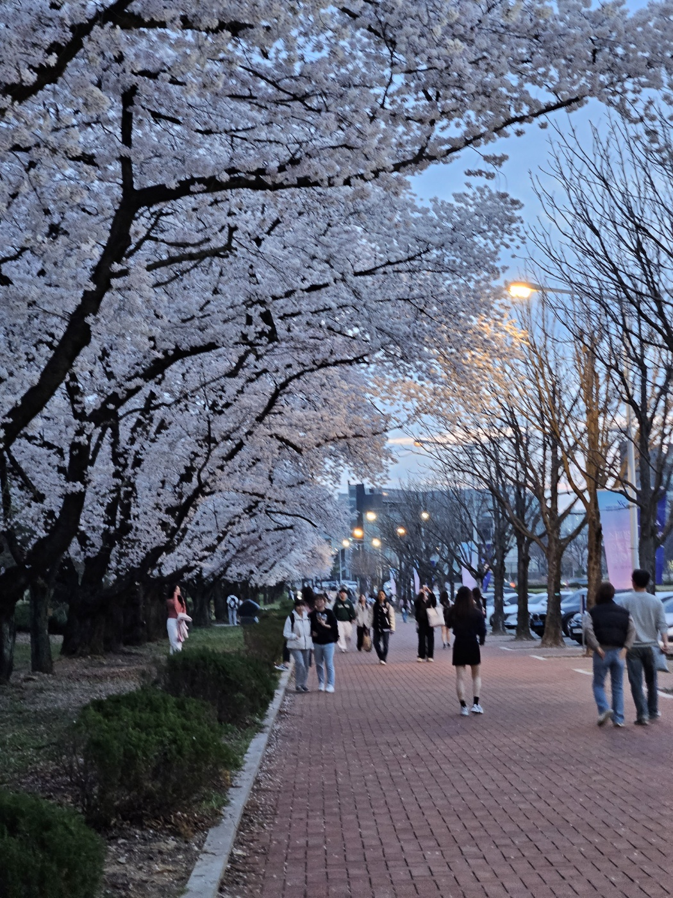
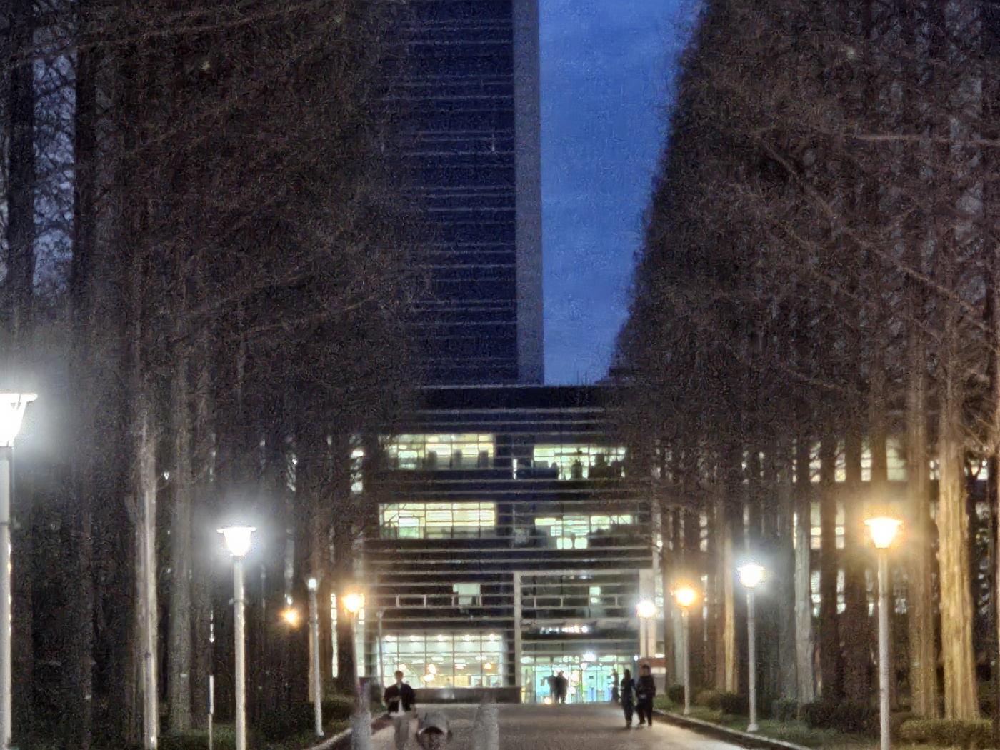
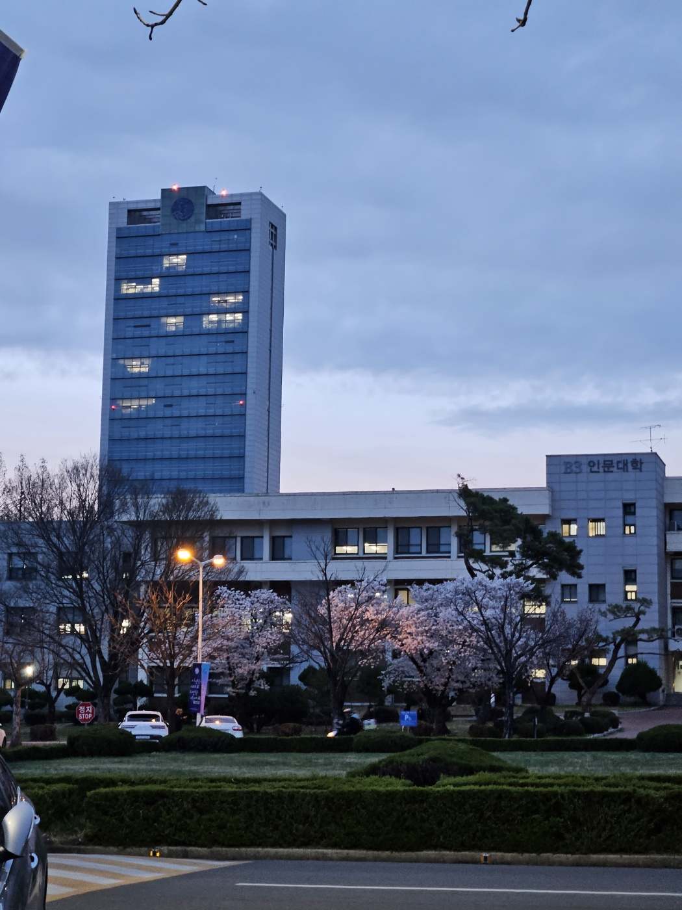
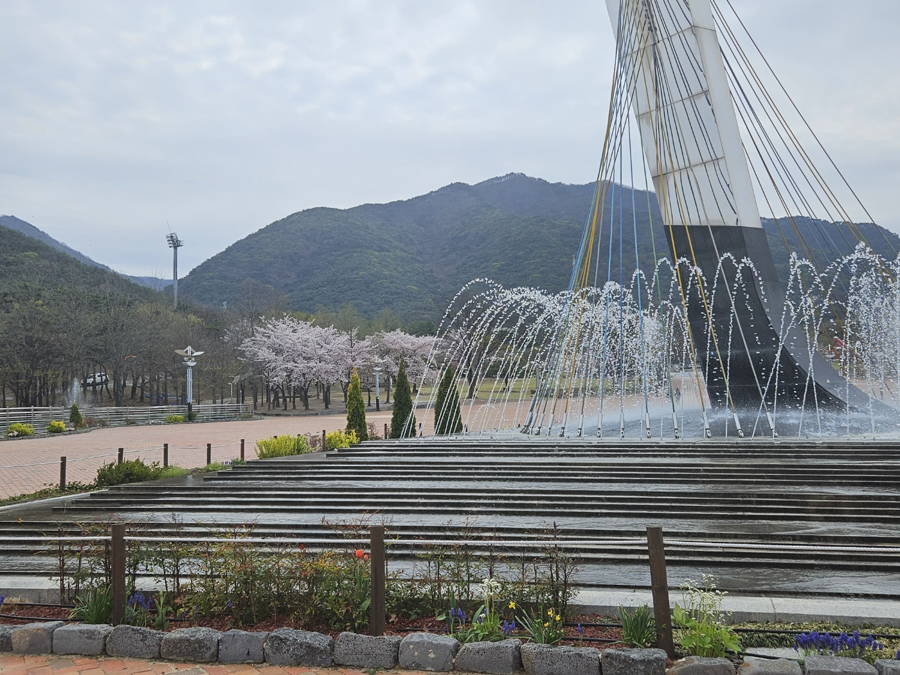

길가에 심어진 꽃들
집에 가는 길에 유치원 근처 흙 길에 못 봤던 꽃이 심어져 있던 것을 보았다. 그냥 지나칠 수 있었지만 옛날에 꽃 심기 봉사 활동을 했던 것이 생각났다. 어떠한 단체에서 심은 꽃이라고 쓰인 팻말을 봤다. 봄을 맞이해 거리가 예뻐 보일 수 있도록 해준 것 같아서 기분이 좋아져 덩달아 사진을 찍었다. 봉사 활동을 하면서 꽃을 심으며 길거리가 더 화사해지고 공기가 좋아지는 것을 느꼈었었다. 열심히 했었는데 이렇게 사소한 행복을 느낄 수 있다는 것이 좋았었다. 지금도 주변의 식물을 보며 살아가면서 작은 행복을 느끼면서 지내는 것이 작지만 중요한 부분이라고 생각한다.
즐겁게 노는 아이들
주변을 살피면서 길을 걷다가 텅 빈 놀이터가 아닌 맑은 햇살 아래에서 웃으며 놀고 있는 아이들이 눈에 들어왔다. 해맑게 웃고 떠들고, 뛰는 아이들을 보니 어렸을 때 똑같았던 제가 생각이 났다. 비록 지금은 원하는 학과를 진학하여 대학을 다니고 있지만 성적과 입시에 연연하지 않고 그저 친구들과 노는 것이 전부였었던 날이 그리우면서도 다시 입시를 해야 한다면 돌아가고 싶지 않을 것 같다고 생각이 들었다. 지금의 아이들이 더 재밌고 행복하게 지냈으면 하는 생각이 나 자연스럽게 눈길을 끌었지 않았나라고 생각이 든다.
시장
매주 열리는 시장을 지나며 사진을 찍었다.그냥 시장을 찍었다고 생각할 수도 있지만 시장을 가면 눈에 보이는 당연한 사람 간의 정이 눈길을 끄는 것에 힘을 주는 것 같다고 생각한다. 또한 코로나19가 퍼졌을 때는 상상도 하지 못했을 코로나 사태 이전처럼 마스크를 쓰지 않고 장사하는 사람들의 친분, 이야기나 손님과의 대화를 지금도 하고 있는 상황이 평소 같지만 작은 행복을 주는 것이라고 생각이 된다. 이렇게 옛날의 나라면 생각하지 못했을 평소와 같은 나날들이 이어지는 것이 당연하다고 여겨지지 않고 소중하게 생각하며 살아가는 삶을 살아가고 싶다고 생각한다.
추억
앨범들과 초, 중, 고와 관련된 것들을 정리하다가 마지막을 간직해둔 졸업 사진을 봤다. 고등학교 졸업을 앞두고 초등학생, 중학생부터 친했던 친구들과 찍은 사진을 보며 힘들지만 재밌었던 학교생활을 기억하게 해주는 순간의 사진으로 기억이 된다. 얼마 되지 않았지만 졸업한 날로 돌아가서 어떻게 했을까 질문한다면 지금은 다른 지역으로 대학을 간 친구들을 포함하여 많은 친구들을 안아주고 앞날을 응원해 줬으면 좋지 않았을까라는 생각이 든다. 그리고 힘들었지만 최선을 다하였던 입시하는 나에게 충분히 잘하고 있으니까 걱정하지 말라고 말하고 싶다..
학생들
1교시 교양 필수 수업을 듣기 위해서 강의실에 자리를 잡고 기다리다가 동기들의 뒷모습을 보았다. 시각디자인 학과 학생들만 모여있었는데 이렇게 저와 같은 목표를 해서 최선을 다해 달려와 자신이 원하는 대학의 학과를 전공하는 사람들이 정말 많구나라고 다시금 생각이 들었다. 많은 학생들이 전공하고 싶어 하는 학과에 경쟁률을 뚫고 들어온 것이 자랑스럽고 열심히 실력을 높이기 위해 노력했던 저에게 칭찬을 해주고 싶다. 비록 개강한지 5주 밖에 지나지 않았지만 모두 성실하게 강의를 듣기 위해서 온 것이 좋다.
나의 반려견

항상 눈길 끝에 있는 반려견의 사진을 찍었다. 과제를 위해서 찍는 것이 아니라 항상 눈길 끝에서, 갤러리에 담겨있는 반려견은 비록 작년부터 키웠지만 제 인생의 전부라고 말할 수 있을 정도라고 할 수 있다. 입시 생활의 가장 큰 버팀목이라고 할 수 있다. 작고 귀여운 존재지만 저에게 가장 큰 변화를 줬다. 동물들을 보는 시각에 대해 소중하게 생각하고 진지하게 고민할 수 있는 시각을 줬다. 반려견은 웃으면서 지내고 있는 지금의 모든 상황들을 소중하게 생각할 수 있도록 만들어주는 존재이다. 또한 동물들과 관련된 문제들에 한 번 더 생각해 보고 관심이 끊이지 않는 시각을 가지게 해준다.
봄
봄에 핀 벚꽃들과 벚꽃 밑에 있는 사람들의 풍경을 봤다. 올해 벚꽃이 핀 시기가 저번과는 다르게 좀 늦게 개화가 되어서 기후변화에 대해 사람들이 조금이라도 관심을 가지게 된 것 같다. 스스로에게 물음을 던져본다면 나도 그런 관심을 가지게 된 계기가 됐다고 생각한다. 사람들이 만개한 벚꽃을 찍고 같이 찍히며 좋은 추억을 만들 수 있게 해주는 작지만 힘을 가지고 있는 꽃이라는 것이 신기한 존재같다. 옛날에는 그저 벚꽃을 보기 위해 영남대에 왔지만 지금은 제가 다니는 대학이라는 점에서 더욱 감회가 새롭게 느껴진다.
불이 켜져있는 건물
영남대학교를 거닐며 찍은 중앙도서관 사진이다. 어두컴컴해진 밤에 밝은 존재를 내뿜으며 학교를 밝혀주고 있는 건물을 봤다. 그냥 밝아서 눈길이 간 것이 아니라 빛 안에 있는 사람들을 생각했다. 밤에도 자신들이 원하는 것을 이루고 되기 위해서 불빛에 의해 보이지 않는 것처럼, 보이지 않는 곳에서도 노력하는 사람들이 멋있다고 생각이 들었다. 결과가 중요한 것도 있겠지만 남들에게 보이든 보이지 않든 자신들이 노력한 시간과 일들이 헛된 것이 아니라 더 나은 자신이 되기 위한 발판이라는 것을 생각하면 좋겠다. 나도 그렇게 생각하며 앞으로 다가오는 미래를 준비하겠다고 생각한다.
대학
대학생이 된 지금은 거의 매일 볼 수 있는 환경이지만 옛날의 나라면 볼 수 없던 풍경이라는 생각이 들었다. 영남대학교라는 대학교를 오기 위해서 미술 입시를 했던 내게 원하는 전공을 하고 있는 지금이 만족스럽냐고 물어본다면 그렇다고 말하고 싶다. 물론 다른 학과를 전공해서 독학할 수 있는 부분이 있지만 전공학과를 전공하는 것은 또 다른 의미가 있기 때문에 잘 버티고 노력해온 제게 잘 했다고 말해주고 싶다고 생각한다. 4년 동안 볼 풍경이기에 지루할 수도 있는 면이 있겠지만 대학을 오기 위해서 최선을 다했었던 나를 생각하면서 입시 때와 같은 마음을 지니고 다니고 싶다.
분수
집 근처의 경기장에 산책을 하며 주변을 구경하고 있는 중 곡선을 그리며 떨어지는 분수가 있었다. 지난주까지는 보이지 않았던 분수를 보며 날이 풀렸다고 상징할 수 있는 벚꽃과 비슷한 존재인 것 같다고 생각했다. 겨울에는 물이 얼어버리는 현상 때문에 틀지 못했지만 봄이 다가오며 날씨가 좋아지면서 점점 분수가 나타나는 모습이 아름답다. 이처럼 나는 디자인이라는 분야를 직접 만들어 나가면서 힘들고 지치는 날이 있을 수도 있겠지만 알맞은 계절이 오면 피어나는 것처럼 나에게도 이러한 날들이 있을 거라고 생각한다.